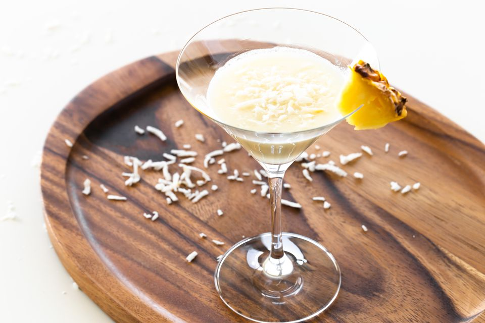

Coconut
Meal
Description.....
Prawn coconut curry

Coconut chip cookies

Coconut cocktail
Health
Coconut water is the clear liquid found inside green, immature coconuts. Young coconuts are favoured for their water as it is tastier, plentiful in volume and easier to access by chopping the top off the softer shell. More mature coconuts have a harder husk and less water inside because it gradually solidifies to form the flesh.
Health Benefits
Contains pottasium
Coconut water also contains some potassium, which is essential for heart health and good skeletal and muscular function.
Athletic performance boost
consuming coconut water after exercise improves endurance and athletic performance. This is because it contains carbohydrate in the form of glucose (a simple sugar) and the electrolytes sodium and potassium – the crucial components in commercial sports drinks.
How do I choose the healthiest coconut water?
Natural coconut water that has been harvested straight from the nut is the best choice. Canned and cartoned versions have generally been processed by heat treatment or pasteurisation to extend their shelf life. Always check the label and look for pure coconut water.
Beauty
Watch the video below for coconut beauty and life hacks!!!.
Want to make your own Coconut oil night cream?
3 Ingredient Coconut oil night cream

This DIY coconut oil night cream is hydrating and so easy to make. All you need are 3 ingredients, a hand mixer or a whisk and some elbow grease
- 1 cup coconut oil, solid
- 1/2 tsp vitamin E oil
- 1/4 tsp tea tree oil
You will need:
- Add the coconut oil to a mixing bowl and whip with an electric mixer until light and fluffy Mix in the vitamin E and tea tree oils
- Store in a container (I used a small mason jar) and use at night before bed after you cleanse your face
Instructions: